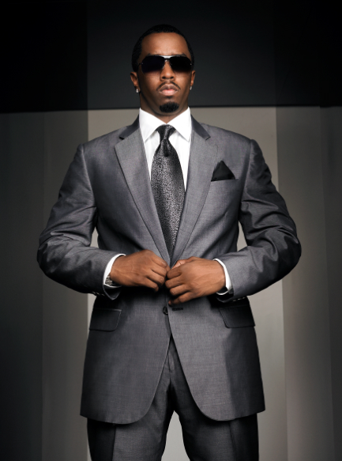

Envisioning Your Design
The four pillars of web design (engaging, aesthetically pleasing, easy to use, and impressive/memorable) can be defined in different ways depending on the intentions of the website’s author. In my opinion, any change to the design/layout of your website will affect at least two, if not more of the aforementioned categories. This being said, I believe making my design easy to use and navigate is the most important. To start, I will format site to be as straight-forward as I can. From here I plan to work to make it engaging by strongly considering the correct information, images, and diction to use in the body of the site. To make the design memorable, a strategic heading can be used. Additionally, I believe a short narrative describing yourself should be used, especially if you have an interesting background (Can be further enhanced by word choice). Finally, to make the design aesthetically pleasing, hopefully you are already satisfied with the format you developed earlier. By messing around with the color options you could make your site pleasing to view.The main idea of my Github website is for it to be used as an additional resource for employers to look at when I am applying to jobs in the near future. That being said, I intend to make my site one that sticks out, yet still portrays a professional, “I get things done,” ideology like we mentioned in class. I plan to format my design similar to the idea behind the https://www.cardamomandtea.com/design. The links to other pages could include, but are not limited to about me, education/experience, extracurriculars, research, and intent. I plan to avoid using large images, and instead have a text consuming most of the page. I believe the “about me” page will bethe first to open on the site to make it more memorable, as well as engaging. The other pages will be selected after much thought in order to make the design as engaging as possible for a health care employer. Only information relevant to them will be included. Finally, the first color scheme that comes to mind for me is blue, white, and beige to keep it professional, while also making it more fun than a normal black and white page. I plan to have text in the center of the page, with small to medium sized images at the top.
REVISED:
The theme I plan to use for my website will be formal with a twist to separate itself from other sites. To personify this theme I would use the example of Sean Combs, otherwise known as P. Diddy. The American rapper and entrepreneur carries and dresses himself in a very formal manner, yet manages to switch up one part of his attire to draw peoples’ attention. In addition, Mr. Combs is known for his very successful business ventures. I will employ various features to reach this theme on my site. In my opinion, this will start with the spatial arrangement. I plan to have all headers, menus, and paragraphs aligned in the center to maintain a symmetric look. Pictures and images will be aligned to the left or right with text wrapped on only one side (the other side will be on the border of the page). From there, I will make strategic decisions in the terms of font style. To achieve that one feature to make my design pop, a consistent font different from the rest of the page will be used for the first header at the top of each page. The rest of the text will be in a font that is both professional and easy to read (Calibri, Oswald, Times New Roman are some that I have in mind). Finally, in my opinion the website color scheme equivalent to the formal attire worn by Mr. Combs is a navy header and footer background, white body background, and potentially different colored text in those regions.